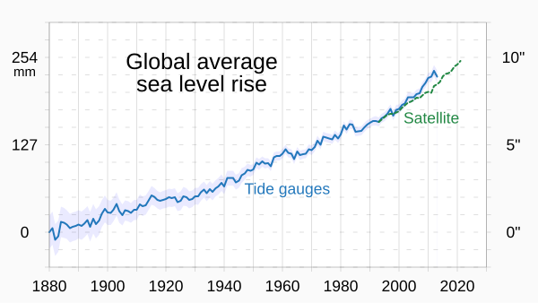

Rise in sea level
Since 1880 the sea level has risen aproxamtely 250mm (or 25cm), at the rate it is rising island countrys like Kiribati and Tuvalu could be underwater by the end of the 21st century.

Nasa Representation of rise in sea level, orange is where it has risen and blue is where it has gone down